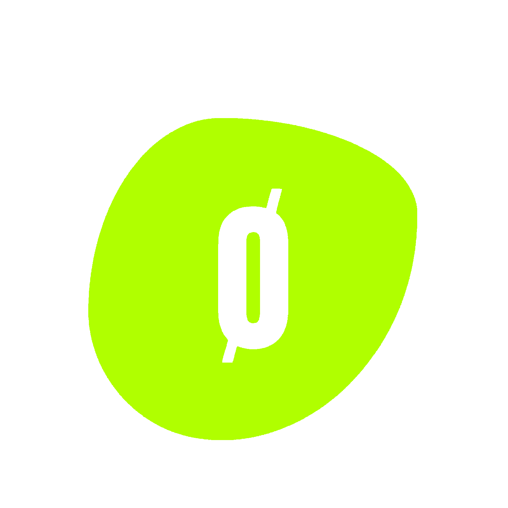

SIGNAL ACTIVE / LOGROÑO
ALGO ESTÁ
A PUNTO DE
CAMBIAR.
DATE
27 NOV 2026
TIME
20:30—02:30
LOCATION
LA RIBERA / LOGROÑO

01 / LINEUP DETECTED
ANDRES CAMPO
FLUG
NIKKA
RAMHË
02 / THE EVENT
UNA NUEVA FORMA DE VIVIR LA MÚSICA ELECTRÓNICA.
ANOMALY llega a Logroño el 27 de noviembre. Una noche construida alrededor del sonido, el espacio y la conexión con la pista.
Plaza de Toros La Ribera
20:30—02:30